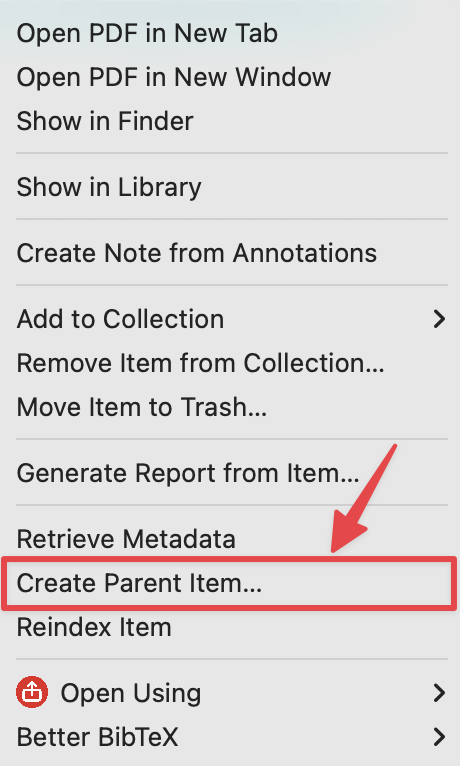
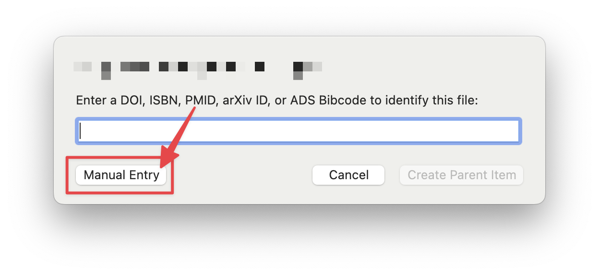

Part 1: Familiarize yourself with Zotero (Walk-through)
Instructions
During today’s lab you will need to use Zotero to complete the Lab 1 APA & Zotero Worksheet. You may use either the lab computers or install the program on your own personal device. For more information about how to install and setup Zotero go here.
Practice Question
Check your work as you go along!
When you think you have entered all the necessary information correctly for each item in Zotero, generate the citationTo create a bibliography or a citations list in Zotero, highlight one or more references and then right-click (or control-click on Macs) to select “Create Bibliography from Selected Item(s)…”. Then select ‘APA 7’ citation style for your citation/bibliography format and choose a Bibliography. Then select ‘Copy to Clipboard’ or save it as a file. and copy/paste it into the associated answer box. Keep trying until each box turns green!
Give it a try below! Copy this citation and paste it into the box below:
Bird, B. (Director). (2015). Ratatouille [Video recording]. Walt Disney Pictures; Pixar Animation Studios.
The APA 7 citation is:
Step 1: Create a new collection
Create a new collection in Zotero and name it [Your Name] APA Walk-Through
Zotero collections are like folders. Adding an item to a specific collection automatically adds it to your overall Zotero library. But you need to keep track of what items are in each collection for when you export your final references list!
To remove an item from a collection, right-click on item (middle panel) ➜ select Remove item from collection...
Step 2: Find a source and add the item to your collection
Use Google scholar to find the 2024 journal article titled “ChatGPT is bullshit”
Download and save (locally) a copy of the article (somewhere you can easily find it!)
Find the in your file manager. Now, drag & drop the file directly into your
[Your name] APA Walk-Throughcollection (in the left-hand panel within Zotero).
Zotero should have correctly identified this item as a journal article and automatically populated the information fields in the right-side panel with almost everything you need to create an APA 7 citation.
But you still need to review the details to make sure there are no errors! Programs freqently make errors!
Step 4: Review & Edit article metadata
- Select (
click on) the item you created in the middle panel. Look at the metadata information that appeared in the right-hand panel. Is everything correctly formatted for an APA 7 stylejournal article?
APA 7 style has very specific rules about capitalization. Generally, all titles should be in Sentence case rather than Title case meaning:
This would be correct
But This Is Very Incorrect
There is an option in Zotero to switch between these two options (next to the title metadata) but you always need to double check!
There are two items associated with this article in that middle-panel: the pdf and what is called a parent-item.
You need the parent-item because that is where you store the metadata. You can see what attachments are connected to an item by clicking on the arrow.
- Using the
Journal Reference Checklisthandout or the table below, review and edit the item metadata to make sure that you have everything you need to cite thejournal articlein APA 7 style. If anything is missing, add it! If anything is improperly formatted, fix it!
TipHint
The Pages field should read: Article 38. Although APA typically asks for first-last page numbers, this journal uses article numbers instead.
Step 5: Generate the APA 7 citation using Zotero
Now that you have confirmed all the information is properly entered, you are ready to ask Zotero to create your APA 7 citation. Give it a try!
TipHint
- Did you select
Sentence caseinstead ofTitle casefor the Title? Remember that APA 7 requires you to only capitalize the first word of each sentence in the article title. Note that you also capitalize the first word after a colon: Like this.
Paste the APA 7 citation below
Right-click on the item (middle panel) ➜ Create Bibliography from Items… ➜ Select Citation Style: American Psychological Association (APA) 7th edition ➜ Copy to Clipboard
The APA 7 citation is:
Step 6: Add another journal article manually
Let’s try to add another journal article to our same collection. Only, this time, we want to add a that is more tricky for Zotero to handle.
Use
PsychInfofrom the UNL Library databases to search for the classic 1975 journal article “Hindsight ≠ foresight: The effect of outcome knowledge on judgment under uncertainty”Download, save and drag the into your
[Your name] APA Walk-Throughcollection in Zotero.Review the metadata in the right panel. Unlike the previous article, Zotero did not fully index the pdf automatically. This means we have to manually add in most of the information ourselves.
Once you have entered all the information you need, ask Zotero to generate your second citation and check it below!
TipHint
The title contains a non-letter character (≠). Copy/paste from the PDF may not work. The title should read: Hindsight ≠ foresight: The effect of outcome knowledge on judgment under uncertainty
Paste the APA 7 citation below
The APA 7 citation is:
Step 7: Add another journal article manually
Let’s add another journal article to our collection. This time, I have found the for you. You can download it by clicking below.
As before, save and drag this new into your
[Your name] APA Walk-Throughcollection in Zotero.The should appear in the middle panel. But this time, Zotero did not create a parent item for you. This means we have to create one before we can manually add in any metadata.
To create a parent item:
Right-click on the item (middle panel) ➜ Create Parent Item...

Now select Manual Entry

Now that you have a parent item, enter the metadata manually.
Once you have entered all the information you need, ask Zotero to generate your third citation and check it below!
TipHint
Make sure you have spelled all the author’s names correctly. If their last name begins with a lower-case letter, make sure that is reflected in Zotero.
Paste the APA 7 citation below
The APA 7 citation is:
Step 8: Adding items with DOI magic!
You can also add items into your [Your name] APA Walk-Through collection without a . One way to do this is to use the DOI identifier for a journal article. This is a unique number assigned to a specific article or other digital object (magazine, dataset, r-package, etc).
The icon to the right of the one where you add an item manually in Zotero, allows you to add via a DOI, ISBN (for books), etc. (via MAGIC-WAND-BUTTON!). Note that doing it this way will add the item, but NOT the PDF of it. However, it will still grab all of the metadata for you! This may be of help on the homework (hint hint).
Try to add this article to your collection: 10.1177/0956797615572232
Review & edit the metadata using the same process as before.
Once you have entered all the information you need, ask Zotero to generate your fourth citation and check it below!
Paste the APA 7 citation below
The APA 7 citation is:
Step 9: More Practice with Other types of sources
You can also use the magic wand feature with ISBNs (and other digital identifiers) to add a Book or a section of a book to your collection.
Add this book chapter titled “Juries compared with what? The need for a baseline and attention to real-world complexity” found here. Use the
DOInumber provided on that page to add this chapter (not the entire book) to to your[Your name] APA Walk-Throughcollection.Review the metadata in the right panel. Unlike with the previous entries, Zotero recognized that this is a
book sectionand started to fill in the metadata accordingly. Using theOther sources handoutincluded below, review and edit the metadata.
When you use the DOI for this chapter, Zotero will automatically record the ISBN: 978-1-4338-2704-4 978-1-4338-2782-2 which is the identifier for the entire book. But sometimes you can find a unique ISBN In many cases book chapters are assigned their own ISBNs.
- Once you have entered all the information you need, ask Zotero to generate your second citation and check it below!
TipHint
Make sure you set the title to sentence case. Check that authors and editors are in the correct order.
Paste the APA 7 citation below
The APA 7 citation is:
Unfortunately, not all digital sources provide an ISBN or DOI number you can use with Zotero. Sometimes, you have to manually enter the information yourself (or use the Zotero browser connector).
Practice using other types of source by adding this as a Newspaper article article.
Use Newspaper article as the Item Type. For more details about how to cite this type of source, view the APA Website.
TipHint
Use Newspaper article as the Item Type. The author should read: Staff, T. O. (organizations as authors should be capitalized and entered in a single field).
Paste the APA 7 citation below
The APA 7 citation is:
Step 10: Generating APA 7 Style report and References page
Now that you have a complete collection of sources, Zotero makes it easy to generate an APA 7 style References page or a report.
Go to your Lab 3 worksheet. Use the collection you created here [Your Name] APA Walk-Through to generate a reportTo create a report, right-click (ctrl-click on macOS) an item or a selection of items in the center pane and select “Generate Report from Selected Item(s)…”. You can also right-click a collection in the left column and select “Generate Report from Collection”. from this collection. Copy/paste the report into the worksheet.
This is not the same as a full reference section. But you can copy/paste the full report in the window that pops up.
Now, go on to the next page to start Part 2.